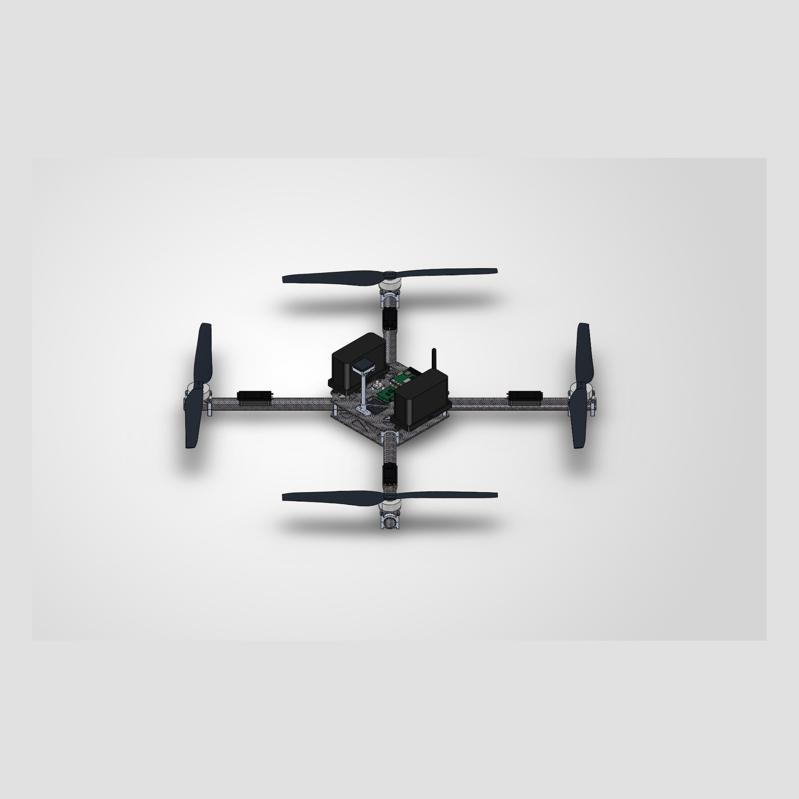
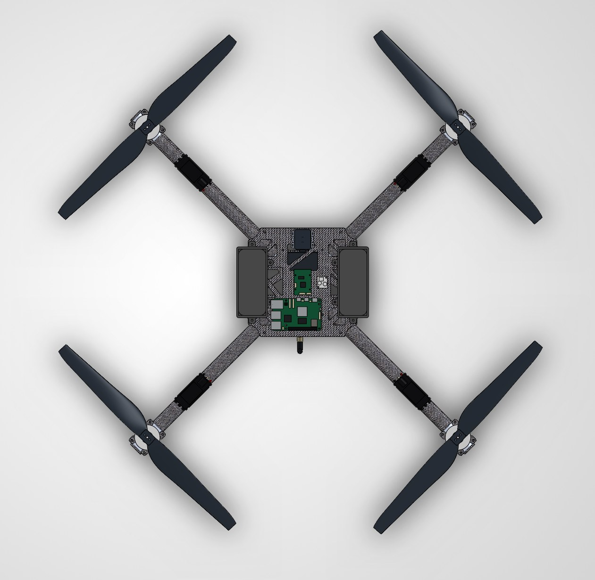
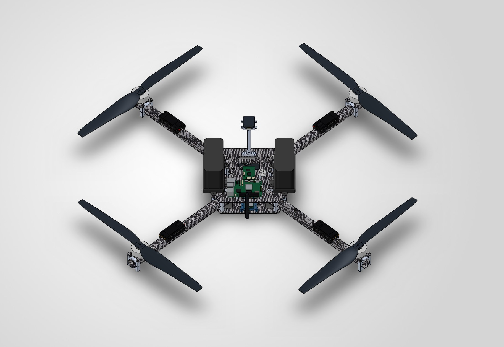

Flight Endurance
Extend useful survey time while carrying the required sensing and power hardware.
Low-Cost Agricultural Survey Drone
Developing an affordable aerial imaging platform through system-level optimization of endurance, cost, structure, propulsion, and sensing capability.
Aerospace Engineering Lead — Structures, Airframe Design & System Optimization
Explore the current airframe — drag to orbit and scroll or pinch to zoom.

Loading 3D model… Looking for
assets/models/project-echo.glb
Drag to orbit · scroll or pinch to zoom.
Extend useful survey time while carrying the required sensing and power hardware.
Treat component cost as a design variable, not an afterthought.
Keep imaging capable enough for agricultural analysis without overspecifying sensors.
Accessible aerial crop-health data for smaller farms.
Project ECHO is a multidisciplinary engineering project focused on developing a lower-cost aerial imaging platform for agricultural surveying. The system is being designed for smaller farms that could benefit from aerial crop-health data but may not be able to justify the cost of existing commercial agricultural drone systems.
Instead of optimizing the aircraft around a single performance metric, the project focuses on balancing endurance, cost, image quality, structural performance, and subsystem compatibility.
Aerospace, electrical, and software engineering develop the aircraft, sensing system, and supporting analysis tools as a complete system rather than optimizing each component independently.
Requirements first — components later.
The project began by defining system requirements rather than immediately selecting motors, propellers, batteries, or sensors.
The aircraft should maximize useful survey time while carrying the required sensing, navigation, propulsion, and power hardware.
Component cost is treated as a design variable rather than an afterthought. The objective is a significantly more affordable agricultural survey platform than many existing specialized systems.
The aircraft is being designed around RGB and near-infrared imaging capable of supporting vegetation analysis such as NDVI while avoiding unnecessarily expensive commercial multispectral systems.
Camera, flight controller, GPS, compass, battery, power electronics, storage hardware, and structure must integrate without unacceptable center-of-gravity, packaging, weight, or serviceability issues.
The planned system and operating concept are being developed with FAA small-UAS operating requirements in mind. Exact compliance claims are reserved until the aircraft configuration and operating procedures are finalized.
Major subsystems of the aircraft.
Image data is intended to be stored onboard for later processing. The current concept does not require onboard image processing or live image streaming.
Coupled endurance, mass, propulsion, and cost.
Endurance cannot be optimized by selecting a motor, propeller, battery, or airframe in isolation. A larger battery increases available energy but also aircraft mass. Larger propellers can improve propulsion efficiency while changing motor requirements and geometry. Structural stiffening can improve integrity while adding weight.
The goal is to select the aircraft configuration through quantitative trade studies rather than choosing components individually.
An optimization workflow compares real propulsion and battery combinations while accounting for system-level constraints.
Complete-assembly CAD for packaging and structure.
The aircraft is modeled as a complete assembly to evaluate structural geometry, component packaging, accessibility, propulsion clearances, and center-of-mass placement before manufacturing.
The CAD model is intended to serve as the basis for structural simulation and physical prototyping. As propulsion and electrical configurations are refined, the airframe can be updated for motor size, propeller diameter, battery dimensions, electronics placement, and sensor configuration.




FEA and modal evaluation before physical testing.
The airframe will be evaluated using structural and modal finite-element analysis to identify stress concentrations, excessive deformation, and potential vibration concerns before physical testing. Results will be published here when validated.
Aerospace decisions constrained by electrical and software needs.
Project ECHO coordinates aerospace/mechanical, electrical, and software disciplines. My primary responsibility is the aerospace/mechanical system, but aircraft decisions must account for requirements from all three areas.
Project roadmap from mission definition to validation.
Problem framing and agricultural survey need.
Endurance, cost, imaging, packaging, operating context.
Motors, props, batteries, ESCs, sensing hardware.
Coupled endurance / cost trade studies in progress.
Assembly model for packaging, CG, and structure.
Static and modal FEA in progress.
RGB + NIR payload packaging and interfaces.
Prototype fabrication — future work.
Static / systems checkout — future work.
Flight performance campaigns — future work.
Compare predictions to measured data.
The final phase of Project ECHO will compare predicted endurance, structural performance, and system behavior against physical test data. This will allow the analytical models and optimization workflow to be evaluated against real aircraft performance.
The strongest message of this project is not simply building a drone — it is developing the aircraft through requirements, quantitative trade studies, CAD, analysis, multidisciplinary integration, and eventually physical validation.